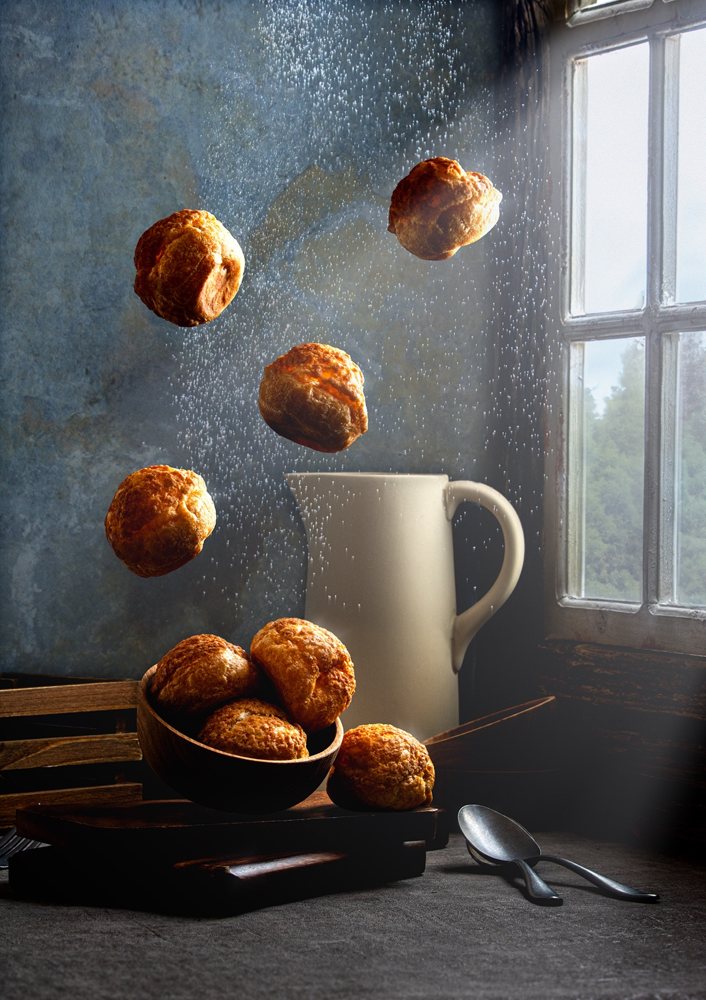

Yomimono — No.2
ご依頼の流れと、料金の考え方

はじめてのご相談は、いつも短い一言から始まります
「撮影の相談です」
公式LINEに、その一言を送っていただければ大丈夫です
何を撮りたいかは、決まっていなくても構いません
流れは、こうです
お問い合わせをいただいたら、まずお返信します
お打ち合わせで、品数や使い道、届けたい相手を伺って、撮影の日を決めます
撮影が終わったら、仕上げをして納品します
納品は、撮影から約2週間が目安です
急ぎの場合は、ご相談ください
料金は、時間では決まりません
品数と内容で決まります
標準は、1品につき2カット
世界観を作り込むスタイリング撮影や、宙に浮かぶような合成が必要なカットは、別のかたちで数えます

合計の最低額は ¥18,000 です
名古屋市内は出張料金が掛かりません
市外の場合は、別途ご案内します
料金は目安としてご案内し、内容に合わせてお見積りを出します
お見積りを必ずご確認いただき、ご了承いただいた上で、撮影となります
具体的な例は、Services のページに置きました
料金のご案内へ
品数が少なくても、多くても、一皿ごとに、光の場所を決めるところから始めます
儚い芸術を、永遠に残る1枚に
Syukoc | Bi-lume / Culinary Visual Artist
撮影のご依頼・ご相談は、公式LINEよりお気軽にお問い合わせください
公式LINEで相談する